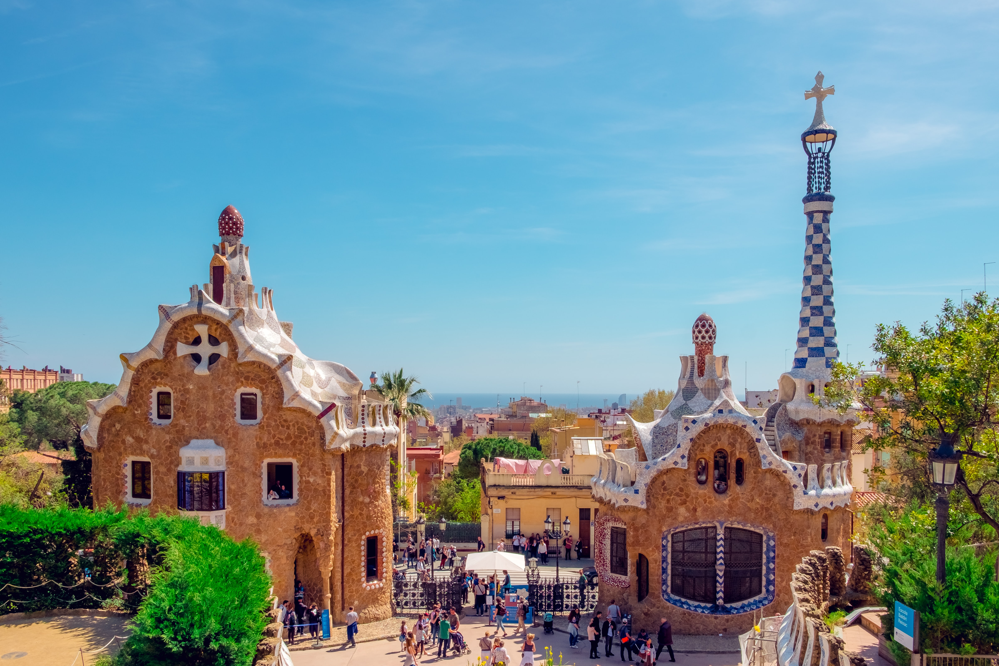
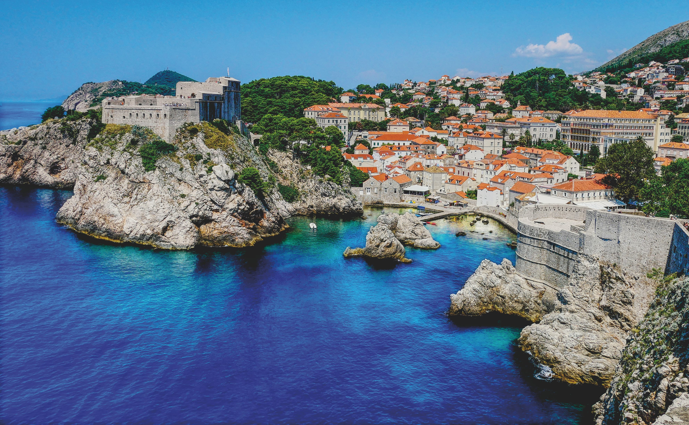
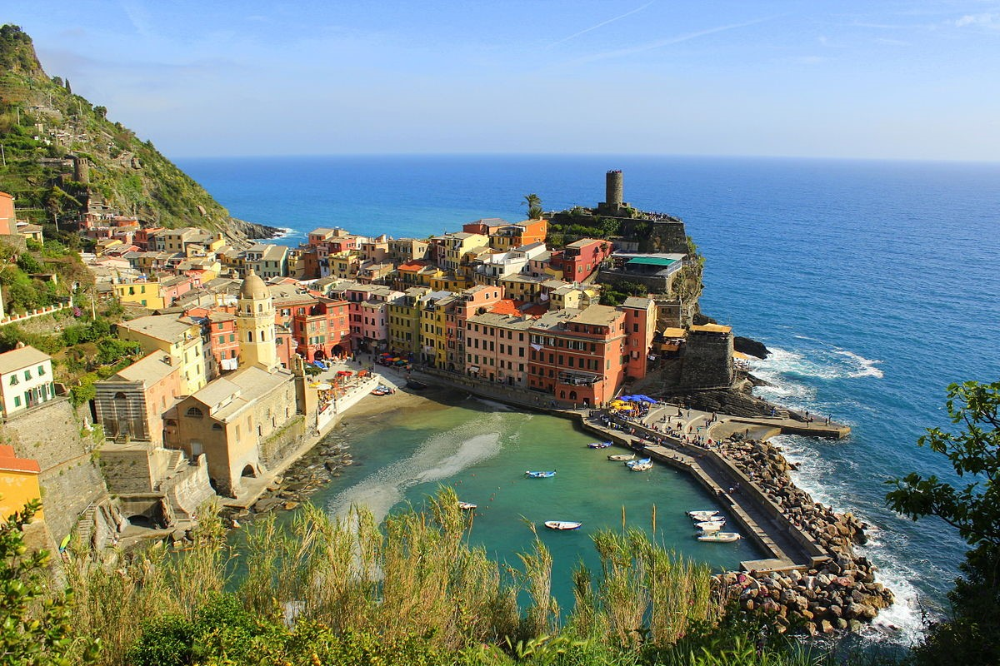

Top 5 Recommended Cities to Visit!
#1:Barcelona
Barcelona is one of the world's most well-known cities, with a vibrant history dating back to its founding by the Romans. As you surround yourself with the mix of foods amid the backdrop of all styles of architecture, city's unique culture is apparent. The city is also home to FC Barcelona, one of the most prominent soccer teams in the world.
#2:Kyoto

Kyoto is considered the cultural center of Japan, and is the traditional capital from where Japanese emperors ruled the country until 1889. Should you make the trip, you can expect to find numerous landmarks that preserve traditional Japanese culture and history.
#3:Istanbul

Istanbul is located in Turkey and a historically significant city. Formerly known as Constantinople during Roman times, Istanbul is situated right at the precipice of the Black Sea, seperating the European and Asian landmasses. As such, Istanbul has been the staging ground for countless historical events. Between the beautiful landmarks, scenery, culture, and history, this city is a must-see.
#4:Dubrovnik
Dubrovnik is a city located on the coast of Croatia. As with many old coastal cities in Europe, Dubrovnik became an important fortified city that was occupied by numerous powers throughout history, including the Romans. The city is shockingly picturesque, with clear beaches and a city that displays all that that Croatian culture has to offer. The city's medieval walls have also been used to film scenes in 'Game of Thrones'.
#5:Cinque Terre
Cinque Terre is located on the coast of Italy, and is actually a group of five villages. The area is rugged and hilly, and over the centuries the hillsides have been heavily terraced to grow olives and grapes. Between the view, the relaxed Italian atmosphere, and the warm climate, Cinque Terre is the ideal vacation destination.